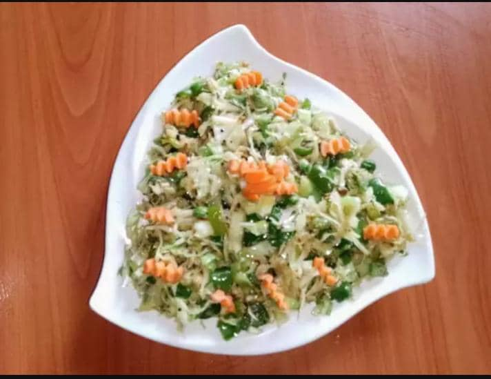

Welcome! Here you can learn how to make a salad
Bell pepper cabbage salad
Now what does salad look like?

More about salad
List of ingredients
- 1/2 cabbage shredded
- 1 tps black pepper powder
- Salt to taste
- 2 medium size green bell pepper
- 3 tbsp pure ghee/ vegetable ghee
- 1/2 cumin seeds
Method
- Heat pure ghee/ vegetable ghee, add
cumin seeds when start to crackle add
cabbage shredded, peas mix well
- Add salt, black pepper powder well,
cover and cook for 5 mins, on slow
medium frame, finally add green bell
pepper. Mix it well, just saute, cook
for 5 mins. serve.
- Garnish with carrot small thick ribbons
Go back to the main page